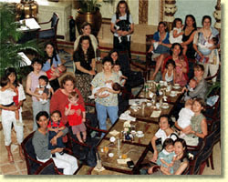

Mothers' day: the mothers gather for their demonstration. A Peninsula spokesman said the hotel had to be sensitive to guests with different cultural beliefs. Picture by Dickson Lee
CERI WILLIAMS
Eighteen mothers breast-fed their babies in public at The Peninsula hotel yesterday to protest over its policy towards breast-feeding.
The demonstration was held after one of the women claimed she had been asked by a member of the hotel's staff to use a bathroom to feed her baby.
Sueli Rocha said a security woman had asked her to stop breast-feeding in public and the hotel manager said she could use the bathroom for more privacy.
The Peninsula denied it "actively" discouraged breast-feeding in public but said it must be sensitive to guests with different cultural beliefs.
Staff did not approach the 18 mothers yesterday.
Candy Galarza, who organised the protest, said: "Breast-feeding is perfectly natural and it's the best thing for our children."
Fellow protester Maggie Yu Yuen-ling said she had once been told to stop breast-feeding in public when she was staying in a health centre.
"I think one of the reasons why people do not like it is because they are embarrassed, but I do not think it is bad," she said.
And Chua Beng-wan said: "It is OK to have pornographic magazines on display in shops, yet people are offended by breast-feeding."
The Peninsula said it appreciated that breast-feeding was the best nutrition for babies and they could offer a room if women wanted privacy "for this natural function".
"But as an international hotel hosting guests of many different cultures and beliefs - some more and less conservative than others - we have to take the feelings of all our guests into account at all times," a spokesman said.
"If a lady wishes to breast-feed in public we are happy to go along with her wishes but would request her co-operation to ensure this is done as discreetly as possible."
The Peninsula said it could offer a "discreet" room for mothers if they wanted "to avoid the possibility of upsetting the feelings and sensibilities of guests sitting in the vicinity".
I think one of the reasons why people do not like it is because they are embarrassed, but I do not think it is bad
Markets | Focus | Sport | Property | Technology | Index
[SCMP Home]
[Classified Post]
[1997]
[Internet Business Centre] [Your Money]
Copyright ©1999 South China Morning Post Publishers Ltd.
All Rights Reserved.